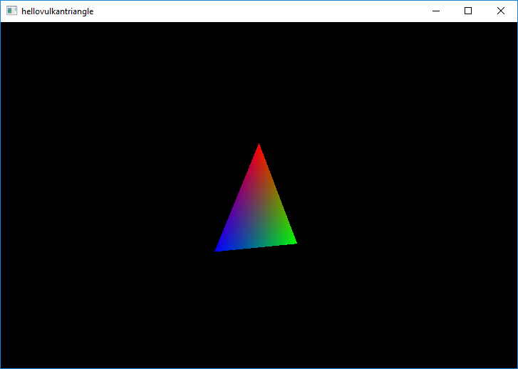

Hello Vulkan Triangle Example
Shows the basics of rendering with QVulkanWindow and the Vulkan API.
The Hello Vulkan Triangle Example creates a full graphics pipeline, including a vertex and fragment shader, to render a triangle.

Startup
Each Qt application using Vulkan will have to have a Vulkan instance which encapsulates application-level state and initializes a Vulkan library.
A QVulkanWindow must always be associated with a QVulkanInstance and hence the example performs instance creation before the window. The QVulkanInstance object must also outlive the window.
QVulkanInstance inst;
inst.setLayers({ "VK_LAYER_KHRONOS_validation" });
if (!inst.create())
qFatal("Failed to create Vulkan instance: %d", inst.errorCode());
The example enables validation layers, when supported. When the requested layers are not present, the request will be ignored. Additional layers and extensions can be enabled in a similar manner.
VulkanWindow w;
w.setVulkanInstance(&inst);
w.resize(1024, 768);
w.show();
Once the instance is ready, it is time to create a window. Note that w lives on the stack and is declared after inst.
The QVulkanWindow Subclass
To add custom functionality to a QVulkanWindow, subclassing is used. This follows the existing patterns from QOpenGLWindow and QOpenGLWidget. However, QVulkanWindow utilizes a separate QVulkanWindowRenderer object.
The QVulkanWindow subclass reimplements the factory function QVulkanWindow::createRenderer(). This simply returns a new instance of the QVulkanWindowRenderer subclass. In order to be able to access various Vulkan resources via the window object, a pointer to the window is passed and stored via the constructor.
class VulkanWindow : public QVulkanWindow { public: QVulkanWindowRenderer *createRenderer() override; };
The Actual Rendering
QVulkanWindow subclasses queue their draw calls in their reimplementation of QVulkanWindowRenderer::startNextFrame(). Once done, they are required to call back QVulkanWindow::frameReady(). The example has no asynchronous command generation, so the frameReady() call is made directly from startNextFrame(). To get continuous updates, the example simply invokes QWindow::requestUpdate() in order to schedule a repaint.
The example also demonstrates multisample antialiasing. Based on the supported sample counts reported by QVulkanWindow::supportedSampleCounts() the example chooses between 8x, 4x, or no multisampling. Once configured via QVulkanWindow::setSamples(), QVulkanWindow takes care of the rest: the additional multisample color buffers are created automatically, and resolving into the swapchain buffers is performed at the end of the default render pass for each frame.
Running the Example
To run the example from Qt Creator, open the Welcome mode and select the example from Examples. For more information, visit Building and Running an Example.